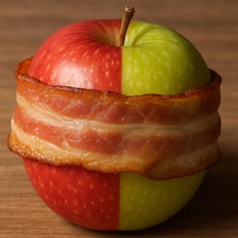

腐烂培根卷
@ppppggggjjjj
RT @Floraino020717: mercy与今日11:10在我家中割喉自杀，由于我报警送医及时，目前已经送入ICU，生命体征相对平稳。但由于气管被完全割开需转院至更好的医院。我真不知道该如何评价这件事了 近期所有商品延迟发货，刚好请大家等一下新品。
Floraino
@Floraino020717
mercy与今日11:10在我家中割喉自杀，由于我报警送医及时，目前已经送入ICU，生命体征相对平稳。但由于气管被完全割开需转院至更好的医院。我真不知道该如何评价这件事了 近期所有商品延迟发货，刚好请大家等一下新品。